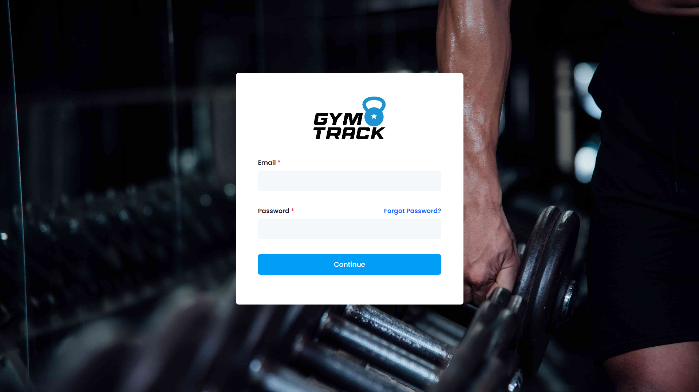
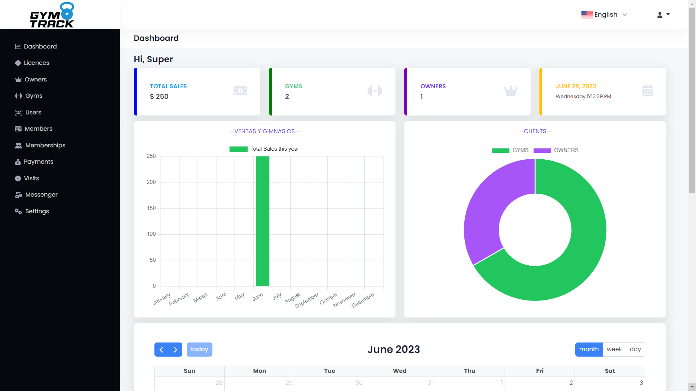
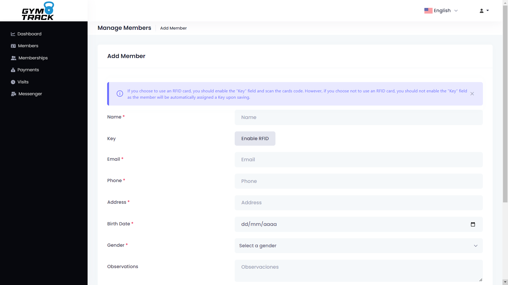
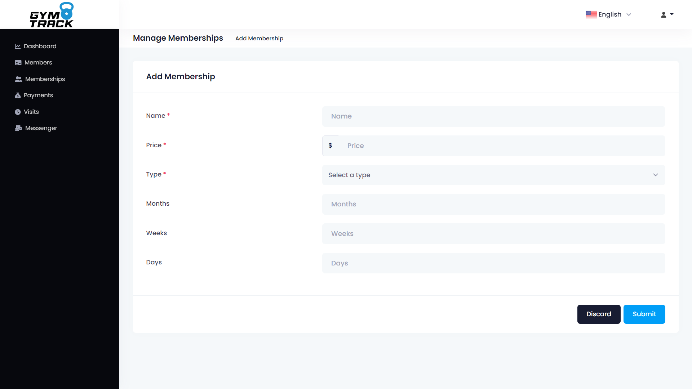
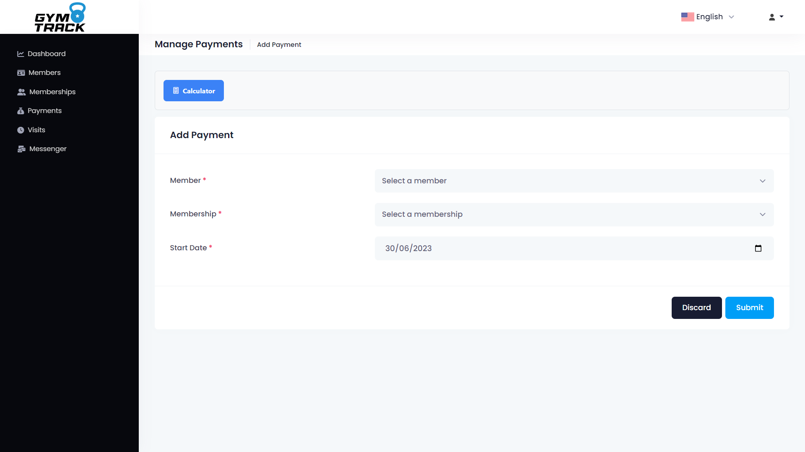
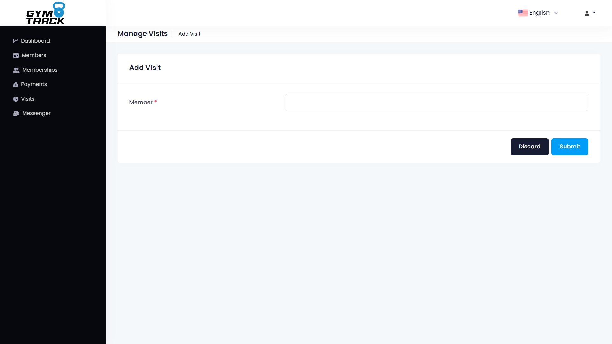
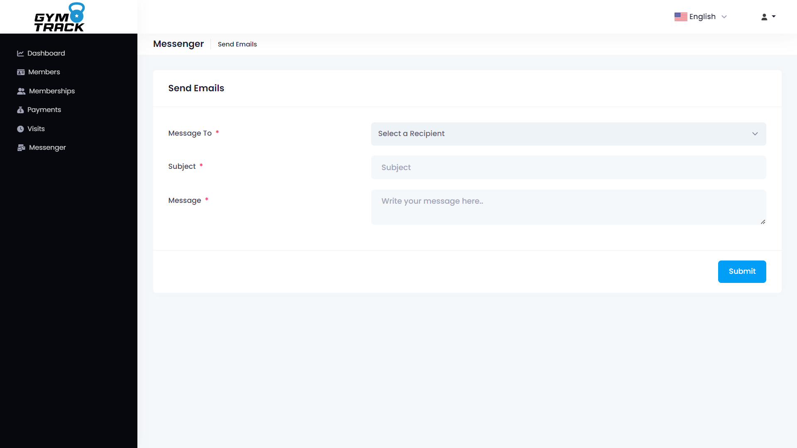
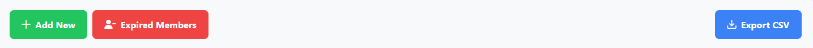

MAIN
Welcome to the help file for the installation and configuration of the web application GymTrack.
Introduction:
GymTrack is a Multi-Tenant architecture web application focused on SAAS, which allows users to manage their gyms as well as manage memberships, clients, visits, payments, and more.
System requirements:
Before starting the installation, make sure that your system meets the following requirements:
Web browser:
It is recommended to use the latest version of Google Chrome, Mozilla Firefox, or Safari for the best user experience.
Operating system:
GymTrack is compatible with all operating systems, including Windows, Linux, and Mac.
Installation:
Follow the steps below to install GymTrack on your system: Click here
INSTALLATION
Database
First, you need to install PostgreSQL. To do this, download the installer from the official PostgreSQL website https://www.postgresql.org/download/ and follow the installation steps.
After installing PostgreSQL, we will run pgAdmin, which is the database management tool for PostgreSQL. In pgAdmin, we will create a database with a name of our choice. In this case, it will be called "gymtrack".
The username for connecting to the database will be "postgres" or the username created during the PostgreSQL installation, and the same goes for the password.
BackEnd (Server)
Now we will proceed with the installation of the server. To do this, download the installer from the official Node.js website https://nodejs.org/es/download/ and follow the installation steps.
After Node.js has been installed, open a terminal and run the following command:
npm install
After installing the dependencies, we will proceed to open the file
".env.example" and rename it to
".env". Open the file and modify the database connection details, which are the most crucial ones (although there may be other variables that can be changed, these are the ones that establish the connection to the database):
-
DB_HOST =
YOUR_HOST
-
DB_USER =
YOUR_USER
-
DB_PASS =
YOUR_PASS
-
DB_DATABASE =
YOUR_DATABASE
Next, this includes the file
".env.example":
PORT=8080
HOST_URL=http://localhost:8080/
APP_TITLE=
#postgresql database config - Required
DB_HOST=
DB_USER=
DB_PASS=
DB_DATABASE=
#Sendgrid details for sending email - Optional
SENDGRID_API_KEY=
SENDGRID_SENDER=
#Google details for google login - Optional
GOOGLE_CLIENT_ID=
GOOGLE_CLIENT_SECRET=
#Twilio details for phone OTP login - Optional
TWILIO_ACCOUNT_SID=
TWILIO_AUTH_TOKEN=
TWILIO_SENDER=
#Optional
ACCESS_TOKEN_SECRET=
REFRESH_TOKEN_SECRET=
If you want the server to send emails, you need to create an account at https://sendgrid.com/ and obtain an API KEY, which should be placed in the ".env" file under the "SENDGRID_API_KEY" variable.
To send emails, you need to create a sender, which should be placed in the "SENDGRID_SENDER" variable.
The other requested data in the variables is not necessary as some functions are not yet implemented or are still in development.
Finally, once we have configured the ".env" file, we will proceed to execute the following command in the terminal:
npm start
This will start the server, and you can access it using the following address:
http://localhost:8080/
FrontEnd (Client)
In order to view the client, Angular needs to be installed. To do this, download the installer from the official Angular website https://angular.io/guide/setup-local and follow the installation steps.
After installing Angular, open a terminal and run the following command:
npm install
After installing the dependencies, we will proceed to open the file
"src/environments/environment.ts" and change the server connection details, which are as follows:
export const environment = {
baseUrl: 'http://localhost:4200',
production: true,
url: "http://localhost:8080/"
};
If the server port has been changed, you should also update the port in the
"url" variable of the
"src/environments/environment.ts" file.
* Note: In the environments folder, there are two files, one for production and the other for development. In this case, the production file is being demonstrated.
Finally, once we have configured the "src/environments/environment.ts" file, we will proceed to execute the following command in the terminal:
npm start
This will start the client, and you can access the web page at the following address:
http://localhost:4200/
* Note: If the server port has been changed, you should also update the port in the
"url" variable of the
"src/environments/environment.ts" file.
Congratulations 🥳! The server and client have been successfully configured. Now you can access the web application and enjoy its features.
HOW TO USE?
Now we will continue with the steps to be able to use the web application, for this we must access the web page, in this case we will access the following address:
http://localhost:4200/ that belongs to the client (or the address of our server in case it has been changed).
Once the web page has been accessed, the following screen will be displayed:

This screen shows the "Login", in which you must enter the email and password of the account created by default in the database, which is as follows
account created by default in the database, which is the following:
Email:
admin@admin.com
Password:
admin123
Once you have entered your email and password, you must press the "Continue" button, which will take you to the following screen: "Continue".
which will take you to the next screen:

This screen displays the "Dashboard", which shows a summary of the most important data of the web application, as well as a bar chart with the monthly
web application, as well as a bar chart with the revenues per month and a pie chart with a comparison of the gyms and registered owners.
comparison of the gyms and registered owners.
A person icon is displayed in the upper right corner, which refers to the logged in user,
When this dropdown is opened, the "Profile", "Change Password" and "Logout" options are displayed.
Now we will continue with the explanation of each of the options of the left side menu:
Dashboard:
This module shows a summary of the most important data of the web application, as well as a bar chart with the revenue per month and a pie chart with a comparison of gyms and owners.
bar chart with the revenues per month and a pie chart with a comparison of the registered gyms and owners.
registered.
Licenses:
This module displays the licenses of the gyms, in which you can create, edit and delete the licenses of the gyms.
gyms.
Owners:
This module displays the owners of gyms, in which you can create, edit and delete the owners of gyms.
of the gyms.
Gyms:
This module displays the gyms, in which you can create, edit and delete gyms.
Users:
This module shows the users, in which you can create, edit and delete users where the user's role is assigned and at the same time the gym to which he/she belongs is assigned.
the user's role is assigned and at the same time the gym to which he/she belongs is assigned.
Members:
In this module the members are shown, in which you can create, edit and delete the members where you can assign the gym they belong to (it will ask to assign the gym they belong to if the user is SUPERADMIN.
assigns the gym to which it belongs (it will ask to assign the gym to which it belongs if the user is SUPERADMIN, because if it is
ADMIN (Owner), it will automatically assign the gym to which the user belongs by detecting which gym the logged in user belongs to).
logged in user belongs to).
Memberships:
This module shows the memberships, in which you can create, edit and delete memberships where you can assign the gym to which you belong (it will ask you to assign the gym to which you belong if the user is SUPERADMIN.
assigns the gym to which it belongs (it will ask to assign the gym to which it belongs if the user is SUPERADMIN, because if it is
ADMIN (Owner), it will automatically assign the gym to which the user belongs by detecting which gym the logged in user belongs to).
logged in user belongs to).
Payments:
In this module the payments are shown, in which you can create, edit and delete the payments where you can assign the gym to which it belongs (it will ask to assign the gym to which it belongs if the user is SUPERADMIN, because if it is
assigns the gym to which it belongs (it will ask to assign the gym to which it belongs if the user is SUPERADMIN, because if it is
ADMIN (Owner), it will automatically assign the gym to which the user belongs by detecting which gym the logged in user belongs to).
who is logged in). You can also filter by membership and by member.
This module is the most important one since the payments of the members of the gyms are registered here.
Visits:
In this module the visits are shown, in which you can create and delete visits, to delete visits only SUPERADMIN and ADMIN (Owner) users can do it, since they have permissions for this action.
SUPERADMIN and ADMIN (Owner) users can only delete visits, since they have permissions for this action, while Staff users cannot delete visits.
delete visits. You can also filter by gym, by member and by date, this module is the most important because here the visits of the members of the gym are registered.
the visits of the members of the gyms and can be filtered by date to know how many visits have been registered on a specific day.
a specific day.
Messenger:
In this module we can send messages to the members of the gyms, users of the system (this only for SUPERADMIN users), also to a specific email, where you can send a message from the system so that the member or person can see it in their email. No need for us to send an email from our personal email.
Settings:
This module is only visualized by the SUPERADMIN user, where it shows the system configurations, where you can change the system name, the color of the system theme, company information, contact information and other information. system name, system theme color, company information, contact information and other settings.
Now the steps to start interacting with the web application:
1. Create a gym owner.
2. Create a gym.
3. Create a user and assign him/her the role of ADMIN (Owner) and assign the gym to which he/she belongs.
4. Go to the "Licenses" option and in the Toolbar press the "License Type" button and here inside we will press "Add New" to create a license type for example "Monthly" and press the "Submit" button. to create a license type for example "Monthly" and press the "Submit" button.
5. Go to the "Licenses" option and in the Toolbar press the "Add New" button to create a license, where you should select the gym to which it belongs and the type of license. Subsequently, the price of the license to be charged will be displayed. When you save it, the license will be the license will be created.
6. Once the license has been created, automatically (if SENDGRID is configured in the .env file) an email will be sent to the gym with the license information. will be sent to the gym with the information of the created license where it shares the license key so that it can be used. In case SENDGRID has not been configured in the .env file, in the list of licenses you can see the license key created by clicking on the "View" button on the created license.
7. At this point the gym to which we have created the license, can access the web application. When entering the web application it will automatically ask for the license key, which must be entered in order to access and start interacting with the application.
8. Once the gym has entered the license key and it is valid, an alert will be shown that the license has been activated and you will be redirected to the "Dashboard" where you can start interacting with the web application. activated and you will be redirected to the Dashboard where you can start interacting with the web application. After this happens on the Dashboard will show your license expiration date. An email is also sent to the gym with the activated license information where it shares the expiration date of the license. shares the license expiration date and other information.
9. Now the gym can start creating memberships, memberships, payments, visits and more.
10. At this point our gym can operate normally, now we will continue with the explanation of the most important modules of the web application of the web application.
Members:
This module shows the members, in which you can create, edit and delete them. When registering a member, the following form will appear following form appears:

In this form you must enter the member's data (almost all fields are mandatory), as they are relevant data for the member and for the gym. A very important point is that if we want the member to be able to register his visit by RFID card (proximity card), we must press the button "Enable RFID" button to enable the "RFID Card" field to enter the member's RFID card number. If you do not want the member to be able to register his or her visit by RFID card, press the "Enable RFID" button. member's visit by RFID card, the "Enable RFID" button should be left disabled and when the member is saved, it will automatically generate an access key for the The "Enable RFID" button should be left disabled, and when the member is saved, it will automatically generate an access code for the member and a QR code will be automatically generated so that the member can register his or her visit using the QR code.
Memberships:
This module shows the memberships, in which you can create, edit and delete them. When registering a membership, the following form will appear following form appears:

In this form you must enter the membership data (all fields are mandatory), as they are relevant for the membership and for the gym. It asks for data such as the name of the membership, the price of the membership and the type of membership. The type of membership is very important because here the input will be enabled depending on the type of membership. will enable the input depending on the type of membership that has been selected, for example if we select the type of membership "Monthly", the "Months" input will be enabled. Months" input will be enabled, where you must enter the number of months that the membership will last, in case you select the "Weekly" membership type, the "Weeks" input will be enabled. the "Weeks" input will be enabled, where you must enter the number of weeks the membership will last, and so on with the "Daily" membership type.
Payments:
This module shows the payments, in which you can only create and delete them (since you cannot edit a payment). When registering a payment, the following form will appear following form appears:

In this form you must enter the payment data (all fields are required), as they are relevant data for the payment and for the gym. It asks for data such as the member to whom the payment is being made and the membership that is being assigned to the member. Selecting the membership will show us the price of the membership to be charged after selecting the member and the membership. It also asks for the start date of the membership so that when registering the payment it can calculate the expiration date of the membership. can calculate the expiration date of the membership. Once the payment has been registered, an email will be sent to the member with the payment information. After this an alert will appear that the payment has been successfully registered and we will be able to visualize it in the payment list. In case the member is requesting a "Physical Payment Ticket" can be generated for printing by pressing the "Ticket" button in the payment list.
Visits:
This module shows the visits, in which you can only create and delete them (since you cannot edit a visit). When registering a visit, the following form will appear following form appears:

In this form you must enter only one field which is the member to whom you are registering the visit, since it is a relevant data for the visit and for the gym. We will be asked for the member who is registering the visit, but we can not search by name or surname, we can only search for your password and for this We only have to scan the QR code or the member's RFID card and it will automatically register the visit detecting the member's password. In case the member does not have active membership, does not exist or does not have a valid access key it will not be able to register the visit and will throw an alert mentioning the problem that has been detected.
Messenger:
In this module we can send messages to the members of the gym or to a specific email, where a message can be sent from the system so that the member or person can see it in their email. Without the need for us to send an email from our personal email.

All the tables or lists in the system have a search engine, where you can search for any data contained in the table. You can also sort by ascending or descending order. It also has the the option in the "Toolbar" to export the content in CSV format.

The licenses and members module has an internal "Expired" module where you can view expired licenses and members who do not have an active membership that were registered in the system in "Expired Members" and "Expired Licenses" respectively. registered in the system in "Expired Members" and "Expired Licenses" respectively.
Finally for this point you can use the web application normally, in case you need more information or help, you can contact me through my email.
SUPPORT
If you need further support or have any questions, please don't hesitate to contact me via email at thomasorozcog@gmail.com.
Remember, this is a help file for the installation and configuration of the web application. If you need additional assistance, feel free to reach out to me via email.
If you require a custom module or any additional functionality for the web application, you can contact me via email, and I will be happy to provide you with a quote for the module or feature you need.
I can also assist you with the installation of the web application on a server if you're not familiar with the process. Feel free to contact me via email, and I will provide you with a quote for the web application installation on a server.
Thank you for your purchase!